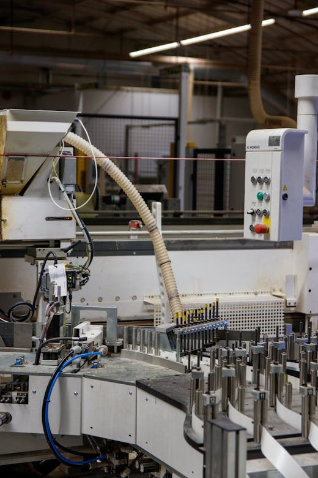

Printing equipment, factories and campaign material supply
INTERLAD coordinated the supply of campaign-related equipment including large-format printing equipment, two complete printing factories and 2,000,000+ T-shirts for political stakeholders in the DRC. We also provided guidance on installation, after-sales support and warranties.
